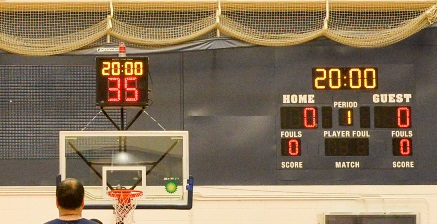

In the NBA, WNBA, and NCAA basketball, each team can play a maximum number of five players on the court. If a team breaks this main rule, they will lose possession of the ball. Sometimes this inadvertently happens, particularly at low levels of the game, when substitute players check into the game and others don't leave the court in time.
To win the game, a team must score more field goals than the other team. A field goal refers to any basket a player scores during gameplay.Field goals can be worth two or three points. Field goals shot from inside the arc that designates the three-point line on the court are worth two points. Field goals shot from outside the arc are worth three points. Field goals can take the form of jump shots, layups, slam dunks, and tip-ins.
have a limited amount of time to shoot the ball during a given possession. In the NBA and WNBA, teams are allowed 24 seconds of possession before they must shoot, while NCAA teams are allowed 30 seconds. A shot clock mounted above the hoop on each side of the court displays and counts down the time allotted. If the shot clock elapses, the opposing team forfeits the ball and becomes the defensive team.
players may only advance the ball by passing or dribbling (bouncing the ball on the floor) as they move up and down the court. If a player stops dribbling, they may not resume; instead, they must pass the ball or shoot it. If an offensive player with possession of the ball stops then continues dribbling before passing or shooting, the referee will call a "double dribble," and the opposing team gets the ball. Additionally, players may only advance the ball by dribbling it. If they run while holding the ball, they are traveling. Referees will issue a traveling call, and possession of the ball will go to the opposing team.
The offense scores a basket, the opposing team receives possession of the ball. One of their players has to inbound the ball from a designated spot on the sidelines of the court to resume gameplay. The player has five seconds to pass the ball to another player on his team, or else the team loses possession. The defender cannot contact the ball when the offensive player is trying to inbound it, or the referee can issue a technical foul.
Once an offensive team advances the ball past the half-court line, the ballhandler may not cross that line again, or a referee will award possession of the ball to the opposing team.
During gameplay, the player with possession of the ball must stay within the designated inbounds lines marked on the court. If a player steps out of bounds or touches this line with their foot while holding the ball, the referee will award possession to the opposing team. Additionally, if a player shoots the ball while their foot is touching the line and the shot is successful, it will not count.
The offensive player shoots the ball, it is illegal for a defensive player to interfere with it once it begins its descent toward the rim. This interference is called a goaltend and will result in an automatic field goal for the offense.
The defending team's goal is to prevent the offensive team from scoring by either stealing the ball, blocking the ball from entering the basket, or using defensive tactics to prevent an offensive player from shooting and scoring.
The area directly in front of the basket is sometimes referred to as "the paint" or "inside the key." Offensive players may not camp out in this area waiting for the ball or an offensive rebound. Any individual player can spend a maximum of three seconds at a time in the space before they have to move. Once they step out of the paint, they can return. If the referee notices a player hovering in the paint for over three seconds, the team will receive a three-second violation.
The NBA allows each team a total of five fouls per quarter. Once a team surpasses this allotment, they go "into the bonus," which means the officials will award the opposing team with free throws for every additional foul that a player commits in that quarter of play. In the NCAA, these foul shots are known as "one and one" shots, which means that if a player makes the first free throw, they receive a second free throw. If they miss the first free throw, either team can rebound the errant shot and claim possession. After 10 team fouls, the opposing team gets a "double bonus," which means they get to take two foul shots.
When a basketball player commits illegal physical contact against an opposing player, the referees will call a personal foul. Most player fouls involve contact that impedes an opposing player's gameplay. When a player fouls another player on an opposing team in the act of shooting, the referee rewards the fouled player with unguarded free throws from the foul line. Each successfully made free throw counts for one point. Referees can assess coaches with fouls for unsportsmanlike acts, such as using profanity to dispute a missed call.
personal foul is an infraction that violates the rules of the game. Players can incur personal fouls by pushing, blocking, or striking another player in the act of shooting. Shooting fouls result in free throw attempts for the fouled player. If a defender fouls a shooter attempting a two-point shot, the shooter will receive two free throws. If a shooter is fouled during a three-point shot attempt, they will receive three free throws. If the player makes the shot they were attempting at the time of illegal contact, the basket counts, and the shooter will receive one free throw.
Flagrant fouls refer to a personal foul that can potentially injure the opponent. These fouls carry heavier penalties, such as fines, immediate ejection, and even suspension. There are two types of flagrant fouls: flagrant foul-penalty (1) and flagrant foul-penalty (2). Flagrant 1 refers to fouls involving unnecessary contact. The penalty for this foul type is a free throw for the opponent and possession of the ball. Flagrant 2 refers to any foul involving unnecessary and excessive contact. Officials perform an instant-play review to determine if an act qualifies for the flagrant 2 penalty. If it does, the player at fault is assessed a fine and an automatic ejection from the game, and the opposing team receives free throws and possession of the ball.
An offensive foul is a personal foul that offensive players commit when their team possesses the ball. The two most common offensive fouls are charging and illegal ball screens. Charging is when an offensive player makes contact with a defensive player who has planted their feet in a locked position. An illegal screen is when a non-ball-handling offensive player moves while setting a screen for their teammate to prevent the defender from moving about the court.
A technical foul is a penalty for violating the game's administrative rules. Officials commonly assess technical fouls for fighting and verbal abuse, often assessing coaches with this penalty if they are too abrasive when disputing a call. Technical fouls result in a free throw and a change of possession. If a player or coach receives two technical fouls in the same game, the referee will eject them. Players with a long history of technical fouls risk suspension from the regular season and even playoff games.
Each team typically consists of five active players on the court at a time. Additional players are usually available on the bench as substitutes.
A standard basketball game is divided into quarters, with each quarter lasting a specific amount of time (e.g., 12 minutes in the NBA). Overtime periods may occur if the score is tied at the end of regulation time.
Points are awarded as follows:
- A field goal (a shot from the field) made from outside the three-point line is worth three points.
- A field goal made from inside the three-point line is worth two points.
- A free throw (taken from the free-throw line with no defender) is worth one point.
The team that has possession of the ball is called the "offensive" team, and their objective is to score. The opposing team is the "defensive" team, aiming to prevent the offense from scoring.
Players with possession of the ball must continually bounce it (dribble) while moving. If they stop dribbling, they must either pass the ball to a teammate or attempt a shot.
In many basketball leagues, there is a shot clock, which is a time limit for the offensive team to attempt a shot (e.g., 24 seconds in the NBA). If they fail to do so, possession is awarded to the opposing team.
Physical contact between players is allowed to some extent, but excessive or illegal contact is considered a foul. Common fouls include charging, blocking, and reaching in. When a player commits a foul, the opposing team may be awarded free throws or possession of the ball.
Players accumulate personal fouls throughout the game. When a player reaches a certain number of personal fouls (e.g., five in the NBA), they are disqualified from the game.
The game begins with a jump ball, where the referee tosses the ball into the air, and two players from opposing teams jump to try to catch it.
The court has boundaries, and if the ball or a player's foot goes out of bounds, possession is awarded to the opposing team.
Players are not allowed to take too many steps without dribbling the ball. Traveling is a violation, and possession is awarded to the opposing team.
Once a team advances the ball past the half-court line, they cannot return to their backcourt with possession. Doing so results in a turnover.
A player cannot start dribbling again after they have stopped.
Teams are allowed a certain number of timeouts per game to regroup and discuss strategy.